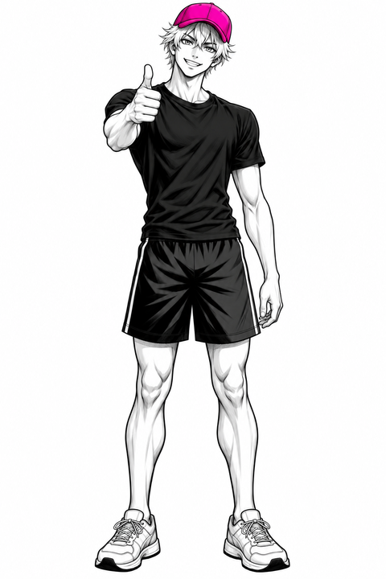

Tips

Short, sourced takeaways from the videos.
Not weak. Overloaded.
A standard push-up moves roughly two thirds of your body weight (approximate, young recreational lifters). Pick a lighter version first.
Video 001Brace your middle
Squeeze glutes and abs so head, hips and heels make one straight line. Do not let the low back sag or the hips hike up.
Video 001Look at the floor
Keep your head in line with your spine and look just ahead of your hands.
Video 001As many as you can, with good form
When your form breaks, the set is over (Harvard Health).
Video 001Tension is the signal
Scientists think muscles grow mainly from mechanical tension: working hard against resistance. It is a leading candidate, not a proven fact.
Video 002Finish sets hard, not to collapse
Going to absolute failure was not clearly better. Easy sets still do not count: the last reps should feel hard.
Video 002Train each muscle about twice a week
Total weekly sets matter more than how you split them.
Video 002Rest long enough
Rest long enough to do your next set well: about a minute or two, longer on the hardest moves.
Video 002Soreness is not a score
Being sore does not prove growth, and not being sore does not prove failure.
Video 002Compare yourself to yourself
People respond very differently to the same training. Track your own numbers.
Video 002Home training can work, with honest limits
Training sets taken hard can build muscle with light or heavy loads in the studies we cite, mostly in young men. Not every move has a perfect home version.
Video 003Only use a secure support
A table row is an option only if the support will not tip, slide or collapse. If you cannot verify it, skip it.
Video 003Stop if something is wrong
Stop exercising with chest pain, unusual shortness of breath, dizziness or sharp pain. Severe or lasting chest pain: get emergency help.
Video 003A pull-up is heavy
It means lifting your own body weight. Most beginners cannot do one at first, and that says nothing about you.
Video 004 (in review)Activity is not growth
Lab studies of muscle activity (EMG) show which muscles work during an exercise, not how much muscle you will build.
Video 004 (in review)Options, not a tested ladder
Hang, row, band-assisted pull and slow lowering are coaching options. No trial we found tested them as a ladder, so choose one you can control on equipment you trust.
Video 004 (in review)Record the same way each time
Write down the version and setup you used and compare under the same conditions. Skip any test that is not safe.
Video 004 (in review)